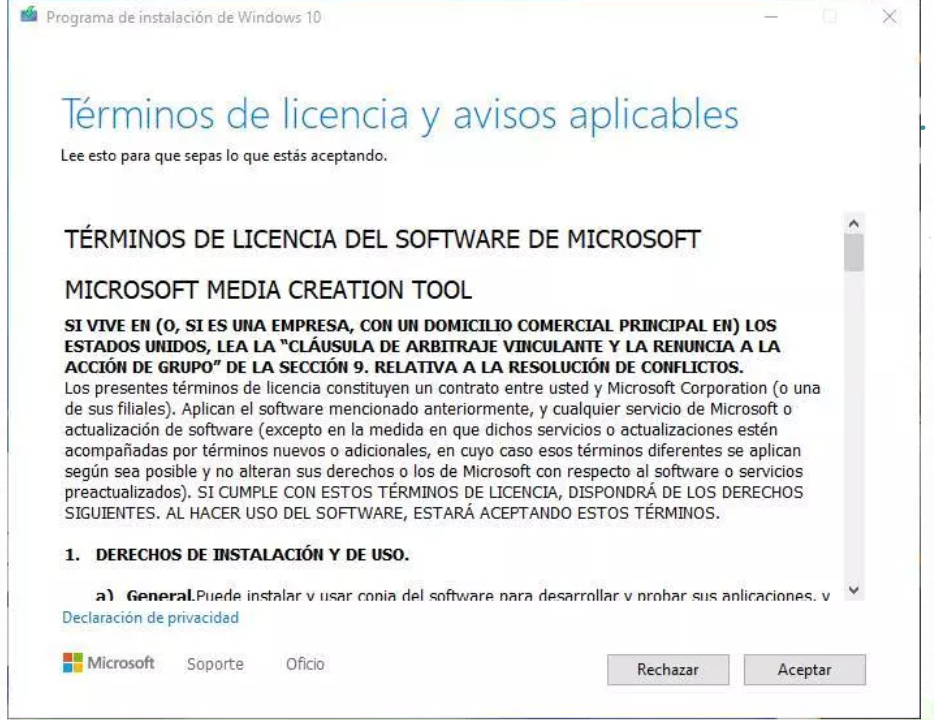

01 INSTALADORES.-Descarga y/o obtener todos los instaladores necesarios.
1º Ir a la pagina de Windows
2º Conectar la unidad flash, usb o dvd
3º Descargar y ejecutar la herramienta
4º Aceptar los terminos de licencia y avisos aplicables

5º Elegir la opcion "crear medios de instalacion"
6ª Seleccionar el idioma, arquitectura y la edicion de Windows 10
7º Elegir la unidad flash,USB,elegir archivo ISO
8º Esperar la descarga y creacion del dispositivo de instalacion
02 BIOS.-Preparar el PC y configurar la BIOS
1º Fijarse al entrar o encender la computadora, que tecla me deja ingresar a la BIOS
2º Buscar las opciones de But o de Buteo
3º Poner la unidad USD como primera opcion de Buteo
4º Salir de la BIOS guardando los cambios realizados
03.-Instalación del Sistema Operativo Windows 10
1°Presionar cualquier tecla para iniciar la instalacion,cuando aparezca el mensaje
2°Elegir el idioma,formato de hora y moneda y el metodo de entrada de teclado
3°Elegir la opcion de instalar ahora
4°Poner la clave de activacion de windows, si no contamos con una, elegir la opcion no tengo clave de producto
5°Elegir la version de Windows 10, Windows 10 pro
6°Aceptar los terminos de licencia de Windows
7°Elegir la opcion ""instalar solo windows
8°Elegir la unidad para instalar windows,elegir la opcion formatear y luego siguiente
9°Esperar que realice el proceso de instalacion
KIT DE SOFTWARE
01
Office
Herramientas de instalacion de Microsoft Office

02
Navegadores
Google Chrome
Mozilla Firefox
03
Multimedia
VLC Player
04
Compresores
WinRAR
WinZIP
05
Otros
VisualStudioCode
TotalCommander
DFD
Eset NOD32